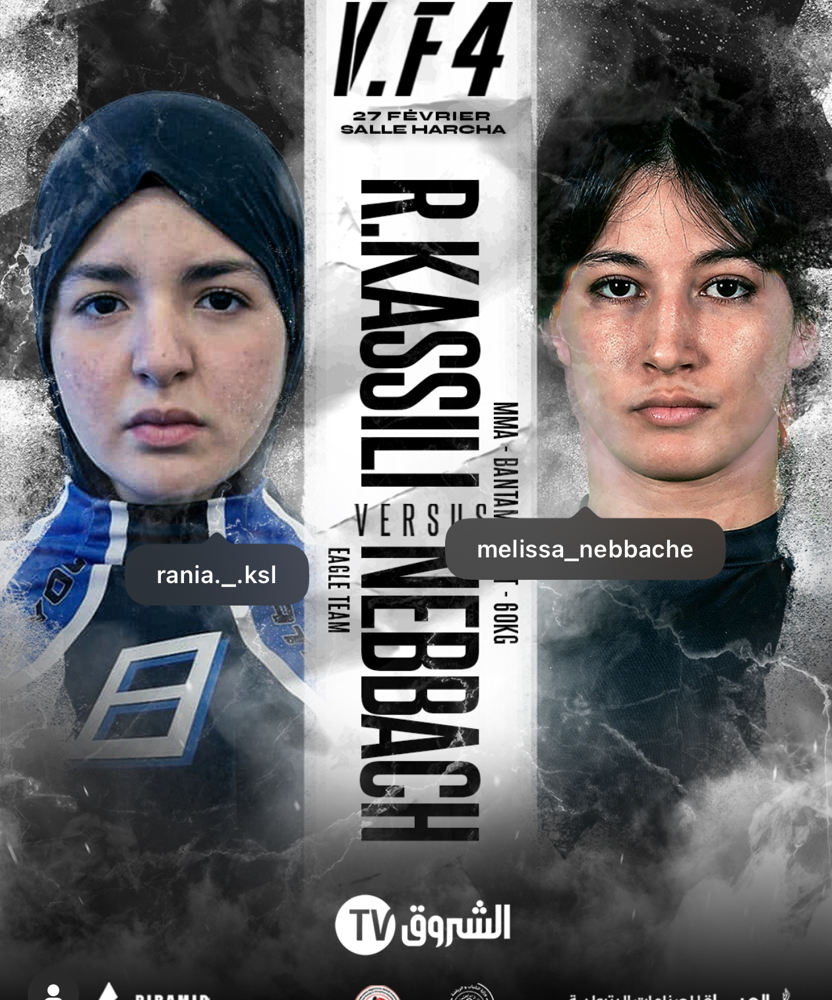
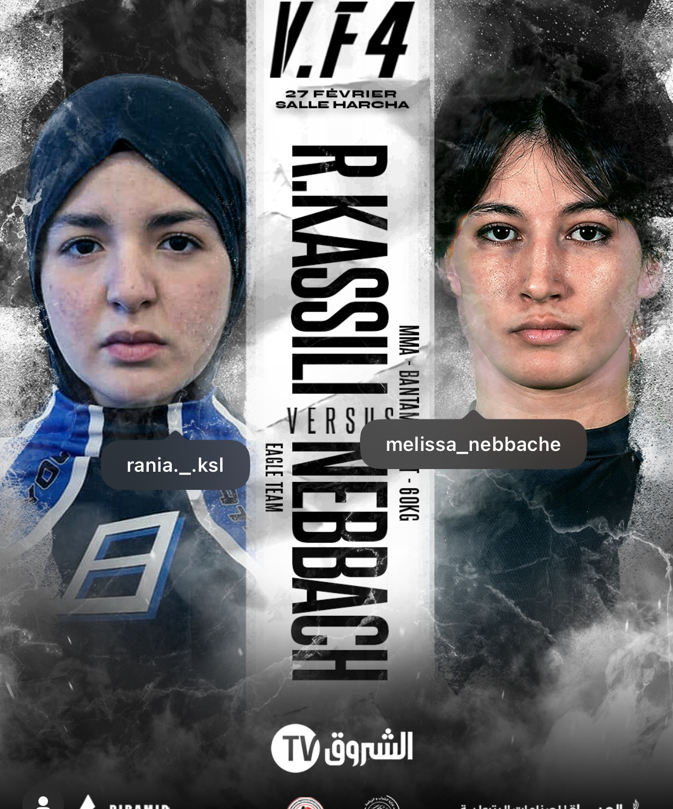
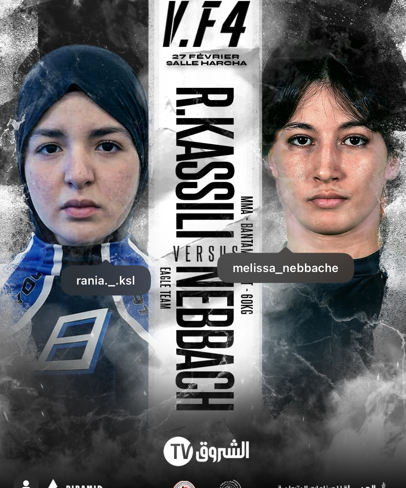

لحظات من مسيرتها
 

المقاتلة الجزائرية الشجاعة في عالم الـMMA
رانية كسيلي، المقاتلة الجزائرية الشابة ذات 16 عامًا، أبهرت الجميع بشجاعتها في عالم الـMMA للهواة. رغم صغر سنها وقلة خبرتها في النزالات الاحترافية، قبلت التحدي وواجهت البطلة الجزائرية المحترفة، ميليسا نباش، في معركة لم تكن متكافئة من حيث التجربة والخبرة. ورغم خسارتها لهذا النزال، إلا أنها لم تخسر الحرب، بل كسبت احترام الجميع وقلوب الجزائريين الذين رأوا فيها رمزًا للإصرار والشجاعة. رانية لم تدخل القفص فقط للقتال، بل دخلته لتُثبت أن العمر ليس حاجزًا أمام العزيمة، وأن الأبطال الحقيقيين لا يُقاسون بعدد الانتصارات، بل بقدرتهم على النهوض بعد كل معركة. مشوارها في الـMMA لم ينتهِ هنا، بل بدأ للتو، وبروحها القتالية وعزيمتها، يبدو أنها ستعود أقوى لتكتب تاريخًا جديدًا في الرياضات القتالية الجزائرية
